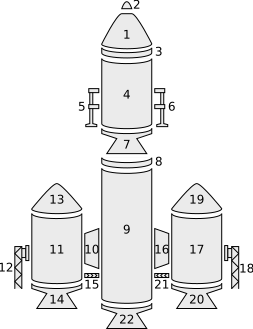
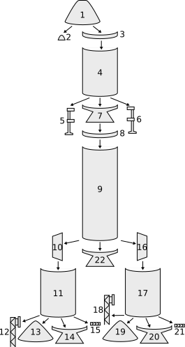
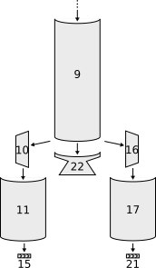
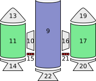
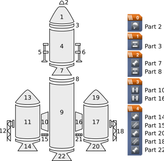
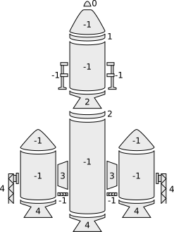
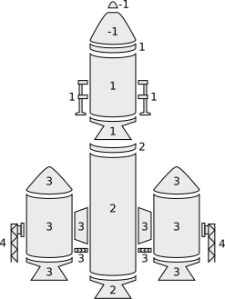

Parts#
A vessel is made of parts, connected to one another in a tree. This guide shows how to walk that
tree, how fuel lines fit into it, and how the staging numbers of each part relate to the staging
sequence. It then shows how to reach any part module, including those of mods with no kRPC
service. The tree, fuel line and staging examples use the vessel below, whose craft file you
can download here.

Figure 1 – The parts that make up the example vessel.#

Figure 2 – The tree of parts for the vessel in Figure 1. Arrows point from each parent part to its children.#
Traversing the Tree#
Parts.Root is the root of the tree, the vessel’s root part: part 1, the command pod, in the
example. Part.Children gives the parts attached to a part, and is empty for a part with
none. Part.Parent gives the part it is attached to, and is null for the root part.
This example walks the tree depth first, and prints each part indented by its depth:
import krpc
conn = krpc.connect()
vessel = conn.space_center.active_vessel
root = vessel.parts.root
stack = [(root, 0)]
while stack:
part, depth = stack.pop()
print(" " * depth + part.title)
for child in part.children:
stack.append((child, depth + 1))
using System;
using System.Collections.Generic;
using KRPC.Client;
using KRPC.Client.Services.SpaceCenter;
class TreeTraversal
{
public static void Main ()
{
using (var connection = new Connection ()) {
var vessel = connection.SpaceCenter ().ActiveVessel;
var root = vessel.Parts.Root;
var stack = new Stack<Tuple<Part,int>> ();
stack.Push (new Tuple<Part,int> (root, 0));
while (stack.Count > 0) {
var item = stack.Pop ();
Part part = item.Item1;
int depth = item.Item2;
Console.WriteLine (new String (' ', depth) + part.Title);
foreach (var child in part.Children)
stack.Push (new Tuple<Part,int> (child, depth + 1));
}
}
}
}
#include <iostream>
#include <krpc.hpp>
#include <krpc/services/space_center.hpp>
#include <stack>
#include <string>
#include <utility>
using SpaceCenter = krpc::services::SpaceCenter;
int main() {
krpc::Connection conn = krpc::connect();
SpaceCenter sc(conn);
auto vessel = sc.active_vessel().value();
auto root = vessel.parts().root();
std::stack<std::pair<SpaceCenter::Part, int>> stack;
stack.push(std::pair<SpaceCenter::Part, int>(root, 0));
while (!stack.empty()) {
auto part = stack.top().first;
auto depth = stack.top().second;
stack.pop();
std::cout << std::string(depth, ' ') << part.title() << std::endl;
for (const auto& child : part.children())
stack.push(std::pair<SpaceCenter::Part, int>(child, depth + 1));
}
}
#include <krpc_cnano.h>
#include <krpc_cnano/services/space_center.h>
#include <stdio.h>
int main() {
krpc_connection_t conn;
if (krpc_open_serial(&conn, "COM0") != KRPC_OK) return 1;
if (krpc_connect(conn, "Tree traversal") != KRPC_OK) return 1;
krpc_SpaceCenter_Vessel_t vessel;
krpc_SpaceCenter_ActiveVessel(conn, &vessel);
krpc_SpaceCenter_Parts_t parts;
krpc_SpaceCenter_Vessel_Parts(conn, &parts, vessel);
krpc_SpaceCenter_Part_t root;
krpc_SpaceCenter_Parts_Root(conn, &root, parts);
typedef struct {
krpc_SpaceCenter_Part_t part;
int depth;
} StackEntry;
StackEntry stack[256];
int stackPtr = 0;
stack[stackPtr].part = root;
stack[stackPtr].depth = 0;
while (stackPtr >= 0) {
krpc_SpaceCenter_Part_t part = stack[stackPtr].part;
int depth = stack[stackPtr].depth;
stackPtr--; // Pop the stack
char* title = NULL;
krpc_SpaceCenter_Part_Title(conn, &title, part);
for (int i = 0; i < depth; i++) printf(" ");
printf("%s\n", title);
krpc_free(title);
krpc_list_object_t children = KRPC_NULL_LIST;
krpc_SpaceCenter_Part_Children(conn, &children, part);
for (size_t i = 0; i < children.size; i++) {
// Push onto the stack, unless it is full
if (stackPtr == 255) break;
stackPtr++;
stack[stackPtr].part = children.items[i];
stack[stackPtr].depth = depth + 1;
}
KRPC_FREE_LIST(children);
}
krpc_disconnect(conn);
}
import krpc.client.Connection;
import krpc.client.services.SpaceCenter;
import krpc.client.services.SpaceCenter.Part;
import krpc.client.services.SpaceCenter.Vessel;
import org.javatuples.Pair;
import java.util.ArrayDeque;
import java.util.Deque;
public class TreeTraversal {
public static void main(String[] args) {
try (Connection connection = Connection.newInstance()) {
Vessel vessel =
SpaceCenter.newInstance(connection).getActiveVessel();
Part root = vessel.getParts().getRoot();
Deque<Pair<Part, Integer>> stack =
new ArrayDeque<Pair<Part, Integer>>();
stack.push(new Pair<Part, Integer>(root, 0));
while (stack.size() > 0) {
Pair<Part, Integer> item = stack.pop();
Part part = item.getValue0();
int depth = item.getValue1();
String prefix = "";
for (int i = 0; i < depth; i++) {
prefix += " ";
}
System.out.println(prefix + part.getTitle());
for (Part child : part.getChildren()) {
stack.push(new Pair<Part, Integer>(child, depth + 1));
}
}
}
}
}
local krpc = require 'krpc'
local conn = krpc.connect()
local vessel = conn.space_center.active_vessel
local root = vessel.parts.root
local stack = {{root,0}}
while #stack > 0 do
local item = table.remove(stack)
local part,depth = item[1],item[2]
print(string.rep(' ', depth) .. part.title)
for _,child in ipairs(part.children) do
table.insert(stack, {child, depth+1})
end
end
import { connect } from "@krpc-org/krpc";
const conn = await connect();
const vessel = await conn.spaceCenter.getActiveVessel();
const root = await (await vessel.getParts()).getRoot();
const stack = [{ part: root, depth: 0 }];
while (stack.length > 0) {
const { part, depth } = stack.pop();
console.log(" ".repeat(depth) + (await part.getTitle()));
for (const child of await part.getChildren()) {
stack.push({ part: child, depth: depth + 1 });
}
}
For the example vessel, it prints:
Command Pod Mk1
TR-18A Stack Decoupler
FL-T400 Fuel Tank
LV-909 Liquid Fuel Engine
TR-18A Stack Decoupler
FL-T800 Fuel Tank
LV-909 Liquid Fuel Engine
TT-70 Radial Decoupler
FL-T400 Fuel Tank
TT18-A Launch Stability Enhancer
FTX-2 External Fuel Duct
LV-909 Liquid Fuel Engine
Aerodynamic Nose Cone
TT-70 Radial Decoupler
FL-T400 Fuel Tank
TT18-A Launch Stability Enhancer
FTX-2 External Fuel Duct
LV-909 Liquid Fuel Engine
Aerodynamic Nose Cone
LT-1 Landing Struts
LT-1 Landing Struts
Mk16 Parachute
Attachment Modes#
A part is attached to its parent either axially, on the end of the parent to form a stack, or radially, on its side. In the example, the parachute (part 2) is attached axially to the command pod (part 1), and the landing leg (part 5) radially to the fuel tank (part 4). The root part has no parent, and counts as attached axially.
Part.AxiallyAttached and Part.RadiallyAttached give the mode. This example walks the tree
as before, and prints each part’s attachment mode:
import krpc
conn = krpc.connect()
vessel = conn.space_center.active_vessel
root = vessel.parts.root
stack = [(root, 0)]
while stack:
part, depth = stack.pop()
if part.axially_attached:
attach_mode = "axial"
else: # radially_attached
attach_mode = "radial"
print(" " * depth + part.title, "-", attach_mode)
for child in part.children:
stack.append((child, depth + 1))
using System;
using System.Collections.Generic;
using KRPC.Client;
using KRPC.Client.Services.SpaceCenter;
class AttachmentModes
{
public static void Main ()
{
using (var connection = new Connection ()) {
var vessel = connection.SpaceCenter ().ActiveVessel;
var root = vessel.Parts.Root;
var stack = new Stack<Tuple<Part,int>> ();
stack.Push (new Tuple<Part,int> (root, 0));
while (stack.Count > 0) {
var item = stack.Pop ();
Part part = item.Item1;
int depth = item.Item2;
string attachMode =
(part.AxiallyAttached ? "axial" : "radial");
Console.WriteLine (new String (' ', depth) + part.Title +
" - " + attachMode);
foreach (var child in part.Children)
stack.Push (new Tuple<Part,int> (child, depth + 1));
}
}
}
}
#include <iostream>
#include <krpc.hpp>
#include <krpc/services/space_center.hpp>
#include <stack>
#include <string>
#include <utility>
using SpaceCenter = krpc::services::SpaceCenter;
int main() {
auto conn = krpc::connect();
SpaceCenter sc(conn);
auto vessel = sc.active_vessel().value();
auto root = vessel.parts().root();
std::stack<std::pair<SpaceCenter::Part, int> > stack;
stack.push(std::pair<SpaceCenter::Part, int>(root, 0));
while (!stack.empty()) {
auto part = stack.top().first;
auto depth = stack.top().second;
stack.pop();
std::string attach_mode = part.axially_attached() ? "axial" : "radial";
std::cout << std::string(depth, ' ') << part.title() << " - "
<< attach_mode << std::endl;
auto children = part.children();
for (const auto& child : children) {
stack.push(std::pair<SpaceCenter::Part, int>(child, depth + 1));
}
}
}
#include <krpc_cnano.h>
#include <krpc_cnano/services/space_center.h>
#include <stdio.h>
int main() {
krpc_connection_t conn;
if (krpc_open_serial(&conn, "COM0") != KRPC_OK) return 1;
if (krpc_connect(conn, "Attachment modes") != KRPC_OK) return 1;
krpc_SpaceCenter_Vessel_t vessel;
krpc_SpaceCenter_ActiveVessel(conn, &vessel);
krpc_SpaceCenter_Parts_t parts;
krpc_SpaceCenter_Vessel_Parts(conn, &parts, vessel);
krpc_SpaceCenter_Part_t root;
krpc_SpaceCenter_Parts_Root(conn, &root, parts);
typedef struct {
krpc_SpaceCenter_Part_t part;
int depth;
} StackEntry;
StackEntry stack[256];
int stackPtr = 0;
stack[stackPtr].part = root;
stack[stackPtr].depth = 0;
while (stackPtr >= 0) {
krpc_SpaceCenter_Part_t part = stack[stackPtr].part;
int depth = stack[stackPtr].depth;
stackPtr--; // Pop the stack
bool axially_attached;
krpc_SpaceCenter_Part_AxiallyAttached(conn, &axially_attached, part);
const char* attach_mode = axially_attached ? "axial" : "radial";
char* title = NULL;
krpc_SpaceCenter_Part_Title(conn, &title, part);
for (int i = 0; i < depth; i++) printf(" ");
printf("%s - %s\n", title, attach_mode);
krpc_free(title);
krpc_list_object_t children = KRPC_NULL_LIST;
krpc_SpaceCenter_Part_Children(conn, &children, part);
for (size_t i = 0; i < children.size; i++) {
// Push onto the stack, unless it is full
if (stackPtr == 255) break;
stackPtr++;
stack[stackPtr].part = children.items[i];
stack[stackPtr].depth = depth + 1;
}
KRPC_FREE_LIST(children);
}
krpc_disconnect(conn);
}
import krpc.client.Connection;
import krpc.client.services.SpaceCenter;
import krpc.client.services.SpaceCenter.Part;
import krpc.client.services.SpaceCenter.Vessel;
import org.javatuples.Pair;
import java.util.ArrayDeque;
import java.util.Deque;
public class AttachmentModes {
public static void main(String[] args) {
try (Connection connection = Connection.newInstance()) {
Vessel vessel =
SpaceCenter.newInstance(connection).getActiveVessel();
Part root = vessel.getParts().getRoot();
Deque<Pair<Part, Integer>> stack =
new ArrayDeque<Pair<Part, Integer>>();
stack.push(new Pair<Part, Integer>(root, 0));
while (stack.size() > 0) {
Pair<Part, Integer> item = stack.pop();
Part part = item.getValue0();
int depth = item.getValue1();
String prefix = "";
for (int i = 0; i < depth; i++) {
prefix += " ";
}
String attachMode = part.getAxiallyAttached() ? "axial" : "radial";
System.out.println(prefix + part.getTitle() + " - " + attachMode);
for (Part child : part.getChildren()) {
stack.push(new Pair<Part, Integer>(child, depth + 1));
}
}
}
}
}
local krpc = require 'krpc'
local conn = krpc.connect()
local vessel = conn.space_center.active_vessel
local root = vessel.parts.root
local stack = {{root, 0}}
while #stack > 0 do
local item = table.remove(stack)
local part,depth = item[1],item[2]
local attach_mode
if part.axially_attached then
attach_mode = 'axial'
else -- radially_attached
attach_mode = 'radial'
end
print(string.rep(' ', depth) .. part.title .. ' - ' .. attach_mode)
for _,child in ipairs(part.children) do
table.insert(stack, {child, depth+1})
end
end
import { connect } from "@krpc-org/krpc";
const conn = await connect();
const vessel = await conn.spaceCenter.getActiveVessel();
const root = await (await vessel.getParts()).getRoot();
const stack = [{ part: root, depth: 0 }];
while (stack.length > 0) {
const { part, depth } = stack.pop();
// A part that is not axially attached is radially attached
const attachMode = (await part.getAxiallyAttached()) ? "axial" : "radial";
console.log(" ".repeat(depth) + (await part.getTitle()), "-", attachMode);
for (const child of await part.getChildren()) {
stack.push({ part: child, depth: depth + 1 });
}
}
For the example vessel, it prints:
Command Pod Mk1 - axial
TR-18A Stack Decoupler - axial
FL-T400 Fuel Tank - axial
LV-909 Liquid Fuel Engine - axial
TR-18A Stack Decoupler - axial
FL-T800 Fuel Tank - axial
LV-909 Liquid Fuel Engine - axial
TT-70 Radial Decoupler - radial
FL-T400 Fuel Tank - radial
TT18-A Launch Stability Enhancer - radial
FTX-2 External Fuel Duct - radial
LV-909 Liquid Fuel Engine - axial
Aerodynamic Nose Cone - axial
TT-70 Radial Decoupler - radial
FL-T400 Fuel Tank - radial
TT18-A Launch Stability Enhancer - radial
FTX-2 External Fuel Duct - radial
LV-909 Liquid Fuel Engine - axial
Aerodynamic Nose Cone - axial
LT-1 Landing Struts - radial
LT-1 Landing Struts - radial
Mk16 Parachute - axial
Fuel Lines#

Figure 3 – Part of the tree from Figure 2, with fuel line part 15.#

Figure 4 – The fuel lines of the example vessel. Fuel flows from the parts in green into the part in blue.#
A fuel line is a part in the tree, as Figure 3 shows. Its parent is the part it takes fuel from. The part it feeds is not in the tree.
In Figure 4, fuel line part 15 takes fuel from fuel tank part 11, in green, and feeds fuel tank part 9, in blue. The fuel line is a child of part 11, and nothing in the tree connects it to part 9.
Part.FuelLinesTo and Part.FuelLinesFrom give these connections. For fuel tank part 11,
Part.FuelLinesTo returns a list holding fuel tank part 9. For fuel tank part 9,
Part.FuelLinesFrom returns fuel tank parts 11 and 17, both in green.
Staging#

Figure 5 – The example vessel with a staging sequence.#
Each part has two stage numbers: the stage in which it is activated, from Part.Stage, and
the stage in which it is decoupled, from Part.DecoupleStage. Both are -1 for a part that
staging never activates or decouples.
Figure 5 shows a staging sequence for the example vessel. Figure 6 shows the stage in which each part is activated, and Figure 7 the stage in which each part is decoupled.

Figure 6 – The stage in which each part is activated.#

Figure 7 – The stage in which each part is decoupled.#
For totals per stage, such as delta-v, thrust and fuel, use Vessel.Stages and
Vessel.DecoupleStages, which return a Stage for each stage.
Part Modules#
A part’s behavior comes from its modules, such as ModuleEngines for an engine. kRPC wraps the
common modules in classes like Engine and SolarPanel. Every module, including those of a
mod, is also available directly, through Part.Modules or Parts.ModulesWithName. A module
has three lists:
Module.FieldList: the module’s fields, such as an engine’s thrust limiter. The right-click menu shows the fields whosePartField.Visibleis true.Module.EventList: the module’s events, the buttons in the right-click menu. The menu shows the events whosePartEvent.VisibleandPartEvent.Activeare both true.Module.ActionList: the module’s actions, the ones an action group can hold.
This example reads the engine fields the right-click menu shows, limits the thrust of each engine,
and extends the solar panels. It covers engines with a ModuleEngines module, and skips those
with ModuleEnginesFX, such as the jet engines:
# Print the fields the right-click menu shows for each engine
for module in vessel.parts.modules_with_name("ModuleEngines"):
for field in module.field_list:
if field.visible:
print(module.part.title, field.gui_name, field.value)
# Limit the thrust of each engine to half
for module in vessel.parts.modules_with_name("ModuleEngines"):
for field in module.field_list:
if field.name == "thrustPercentage":
field.float_value = 50
# Extend the solar panels, as their Extend button does
for module in vessel.parts.modules_with_name("ModuleDeployableSolarPanel"):
for event in module.event_list:
if event.name == "Extend" and event.active:
event.trigger()
// Print the fields the right-click menu shows for each engine
foreach (var module in vessel.Parts.ModulesWithName ("ModuleEngines"))
foreach (var field in module.FieldList)
if (field.Visible)
Console.WriteLine ("{0} {1} {2}",
module.Part.Title, field.GuiName, field.Value);
// Limit the thrust of each engine to half
foreach (var module in vessel.Parts.ModulesWithName ("ModuleEngines"))
foreach (var field in module.FieldList)
if (field.Name == "thrustPercentage")
field.FloatValue = 50;
// Extend the solar panels, as their Extend button does
var panels = vessel.Parts.ModulesWithName (
"ModuleDeployableSolarPanel");
foreach (var module in panels)
foreach (var evnt in module.EventList)
if (evnt.Name == "Extend" && evnt.Active)
evnt.Trigger ();
// Print the fields the right-click menu shows for each engine
for (auto module : vessel.parts().modules_with_name("ModuleEngines"))
for (auto field : module.field_list())
if (field.visible())
std::cout << module.part().title() << " " << field.gui_name() << " "
<< field.value() << std::endl;
// Limit the thrust of each engine to half
for (auto module : vessel.parts().modules_with_name("ModuleEngines"))
for (auto field : module.field_list())
if (field.name() == "thrustPercentage") field.set_float_value(50);
// Extend the solar panels, as their Extend button does
for (auto module :
vessel.parts().modules_with_name("ModuleDeployableSolarPanel"))
for (auto event : module.event_list())
if (event.name() == "Extend" && event.active()) event.trigger();
// Print the fields the right-click menu shows for each engine, and
// limit the thrust of each engine to half
krpc_list_object_t engines = KRPC_NULL_LIST;
krpc_SpaceCenter_Parts_ModulesWithName(conn, &engines, parts,
"ModuleEngines");
for (size_t i = 0; i < engines.size; i++) {
krpc_SpaceCenter_Module_t module = engines.items[i];
krpc_SpaceCenter_Part_t part;
krpc_SpaceCenter_Module_Part(conn, &part, module);
char* title = NULL;
krpc_SpaceCenter_Part_Title(conn, &title, part);
krpc_list_object_t fields = KRPC_NULL_LIST;
krpc_SpaceCenter_Module_FieldList(conn, &fields, module);
for (size_t j = 0; j < fields.size; j++) {
krpc_SpaceCenter_PartField_t field = fields.items[j];
bool visible;
krpc_SpaceCenter_PartField_Visible(conn, &visible, field);
if (visible) {
char* gui_name = NULL;
char* value = NULL;
krpc_SpaceCenter_PartField_GuiName(conn, &gui_name, field);
krpc_SpaceCenter_PartField_Value(conn, &value, field);
printf("%s %s %s\n", title, gui_name, value);
krpc_free(gui_name);
krpc_free(value);
}
char* name = NULL;
if (krpc_SpaceCenter_PartField_Name(conn, &name, field) == KRPC_OK &&
strcmp(name, "thrustPercentage") == 0)
krpc_SpaceCenter_PartField_set_FloatValue(conn, field, 50);
krpc_free(name);
}
KRPC_FREE_LIST(fields);
krpc_free(title);
}
KRPC_FREE_LIST(engines);
// Extend the solar panels, as their Extend button does
krpc_list_object_t panels = KRPC_NULL_LIST;
krpc_SpaceCenter_Parts_ModulesWithName(conn, &panels, parts,
"ModuleDeployableSolarPanel");
for (size_t i = 0; i < panels.size; i++) {
krpc_list_object_t events = KRPC_NULL_LIST;
krpc_SpaceCenter_Module_EventList(conn, &events, panels.items[i]);
for (size_t j = 0; j < events.size; j++) {
krpc_SpaceCenter_PartEvent_t event = events.items[j];
char* name = NULL;
bool active;
if (krpc_SpaceCenter_PartEvent_Name(conn, &name, event) == KRPC_OK &&
krpc_SpaceCenter_PartEvent_Active(conn, &active, event) ==
KRPC_OK &&
strcmp(name, "Extend") == 0 && active)
krpc_SpaceCenter_PartEvent_Trigger(conn, event);
krpc_free(name);
}
KRPC_FREE_LIST(events);
}
KRPC_FREE_LIST(panels);
// Print the fields the right-click menu shows for each engine
for (Module engine : parts.modulesWithName("ModuleEngines")) {
for (PartField field : engine.getFieldList()) {
if (field.getVisible()) {
System.out.println(engine.getPart().getTitle() + " "
+ field.getGuiName() + " " + field.getValue());
}
}
}
// Limit the thrust of each engine to half
for (Module engine : parts.modulesWithName("ModuleEngines")) {
for (PartField field : engine.getFieldList()) {
if (field.getName().equals("thrustPercentage")) {
field.setFloatValue(50);
}
}
}
// Extend the solar panels, as their Extend button does
for (Module panel :
parts.modulesWithName("ModuleDeployableSolarPanel")) {
for (PartEvent event : panel.getEventList()) {
if (event.getName().equals("Extend") && event.getActive()) {
event.trigger();
}
}
}
-- Print the fields the right-click menu shows for each engine
for _, module in ipairs(vessel.parts:modules_with_name('ModuleEngines')) do
for _, field in ipairs(module.field_list) do
if field.visible then
print(module.part.title .. ' ' .. field.gui_name .. ' ' ..
field.value)
end
end
end
-- Limit the thrust of each engine to half
for _, module in ipairs(vessel.parts:modules_with_name('ModuleEngines')) do
for _, field in ipairs(module.field_list) do
if field.name == 'thrustPercentage' then
field.float_value = 50
end
end
end
-- Extend the solar panels, as their Extend button does
local panels = vessel.parts:modules_with_name('ModuleDeployableSolarPanel')
for _, module in ipairs(panels) do
for _, event in ipairs(module.event_list) do
if event.name == 'Extend' and event.active then
event:trigger()
end
end
end
// Print the fields the right-click menu shows for each engine
for (const module of await parts.modulesWithName("ModuleEngines")) {
for (const field of await module.getFieldList()) {
if (await field.getVisible()) {
console.log(
await (await module.getPart()).getTitle(),
await field.getGuiName(),
await field.getValue(),
);
}
}
}
// Limit the thrust of each engine to half
for (const module of await parts.modulesWithName("ModuleEngines")) {
for (const field of await module.getFieldList()) {
if ((await field.getName()) === "thrustPercentage") {
await field.setFloatValue(50);
}
}
}
// Extend the solar panels, as their Extend button does
const panels = await parts.modulesWithName("ModuleDeployableSolarPanel");
for (const module of panels) {
for (const event of await module.getEventList()) {
if ((await event.getName()) === "Extend" && (await event.getActive())) {
await event.trigger();
}
}
}
PartField.Name, PartEvent.Name and PartAction.Name are the identifiers in the module’s
code, which stay the same across game versions and languages. The names the menu shows are
GuiName, and they change with the game’s language.
PartField.Type gives the type of a field, and the matching property reads and sets it, such as
PartField.FloatValue. PartField.Value reads any field as a string, and sets string fields
only. Setting a field works as the right-click menu does, so the module reacts to the change, such
as B9PartSwitch switching a part’s subtype. PartField.Reset restores the value the field had
when the part was loaded.
PartEvent.Trigger clicks an event’s button, and PartAction.Activated triggers an action as
its action group does. Module.Config gives the module’s configuration from the part’s
configuration file, for values the module does not expose as fields.